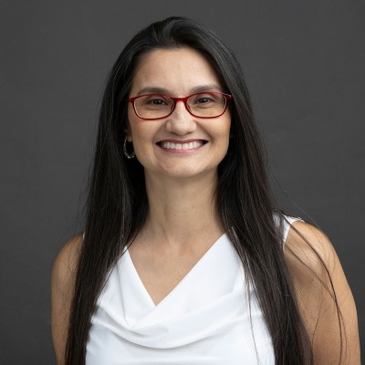

Edna Giraldo

Summary
I’m a results-driven Senior Graphic Designer with 10+ years of experience and Web Developer creating high-impact visual solutions across print,
digital, and web. Skilled in layout design, typography, branding, and production, I translate complex ideas into clear, engaging visuals that
strengthen brand identity and support marketing goals. I’m known for balancing creativity with strategy—delivering work that is visually compelling,
technically precise, and aligned with business objectives.
Education
- Bachelor of Science in Graphic Design — The Art Institute of Fort Lauderdale, FL
- Certificate in Web Design Services — Atlantic Technical College, Coconut Creek, FL
Work Experience
Presort Plus Inc. — Project Coordinator / Graphic Designer
Taylors, SC | Oct 2024 – Present
- Lead cross-department coordination of design projects, ensuring on-time and high-quality deliverables.
- Manage vendor and sales communications to align creative output with client expectations.
- Enhance company website performance through SEO updates and user-focused design improvements.
- Conduct prepress review of customer files to ensure print-readiness and adherence to brand standards.
Hulsey Media — Graphic Designer / Production
Hendersonville, NC | Feb 2024 – Oct 2024
- Designed editorial layouts and advertisements for multiple magazine titles, balancing editorial content and ad placements.
- Collaborated with sales, copywriters, and photographers to ensure cohesive visual storytelling.
- Produced high-resolution, print-ready files while maintaining accuracy and quality.
- Managed advertising submissions through Ad Orbit, streamlining workflow efficiency.
Skills
- Design Software: Adobe Creative Cloud (InDesign, Photoshop, Illustrator), Microsoft 365, Google Workspace
- Digital: Web Design, Email Design, SEO, WordPress, Joomla
- Print: Print Production, Magazine Layout, Prepress, Branding, Typography, Color Theory
- Collaboration: Multi-Project Management, Vendor Relations, Cross-Functional Communicati
- Languages: Bilingual — Fluent in English & Spanish
- Other Tools: Constant Contact, FileMaker Pro
Awards
- Silver ADDY Award, Calendar (2009)
- Silver ADDY Award, Annual Report (2008)
Other